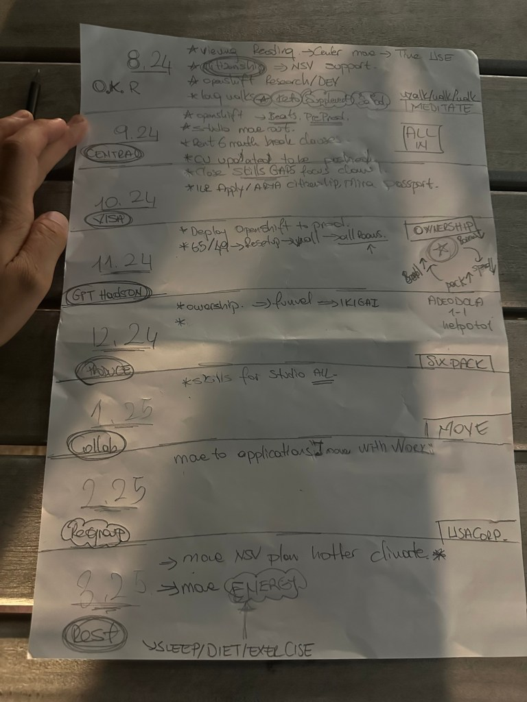

Crafting a Year of Intentional Growth: My Monthly Roadmap for 2024-2025

As the year 2024 begins to wind down, I've taken some time to reflect on the past months and set a clear course for the year ahead. It's easy to get lost in the hustle and bustle of daily life, but having a structured plan ensures that my goals aren't just dreams—they're achievable milestones. Here’s a sneak peek into how I’m planning to tackle each month from August 2024 through March 2025, with a focus on personal and professional growth.
August 2024: Laying the Groundwork
August is all about preparation. I’m dedicating this month to establishing a strong foundation for the months ahead. This involves immersing myself in research and development (R&D), a crucial first step that will set the tone for future projects. Alongside this, I’ll be engaging in daily practices like walking and meditating to keep my mind and body in sync. These routines aren’t just for physical health—they're essential for maintaining mental clarity and focus.
September 2024: Central Operations and System Updates
September is when things start to take shape. The focus shifts to central operations—whether it's refining workflows or updating systems. This month, I’ll also be addressing skills gaps through targeted learning, ensuring I’m equipped to handle any challenges that arise. Additionally, it’s time to dive into some practical tasks like renting spaces or formalizing agreements, setting the stage for smooth operations in the coming months.
October 2024: Deployment and Ownership
October is the month of action. By now, the groundwork laid in August and September will pay off as I deploy OpenShift to production. Ownership—both of projects and personal growth—is a key theme. It’s time to take responsibility and steer these initiatives to fruition. Alongside these efforts, I’ll begin preparations for a move, which could be literal or metaphorical—a shift in workspace, environment, or even mindset.
November 2024: Finalizing and Integration
November is all about bringing things together. The focus will be on the final deployment stages, ensuring that everything is running smoothly. This month, I’ll also be integrating different aspects of my life and work into a coherent whole, guided by the concept of IKIGAI—finding purpose through the intersection of passion, mission, vocation, and profession. Regular one-on-one meetings with key stakeholders will help keep everything aligned and on track.
December 2024: Skill Building and Personal Development
As the year draws to a close, December will be dedicated to skill building—particularly in areas related to creative or production work. Whether it’s honing technical skills or pushing myself physically (hello, six-pack goals!), this month is about self-improvement. On a more practical level, I’ll be ensuring all personal documents, like passports, are updated and ready for any upcoming travels or moves.
January 2025: Application and Movement
With the new year comes new energy. January is about putting plans into motion—whether it’s moving forward with a new application, project, or personal endeavor. The momentum gained in the previous months will propel me into the new year with a sense of purpose and direction.
February 2025: Re-group and Strategic Planning
February is a month of reassessment. It’s time to take stock of what’s been accomplished so far and regroup to plan the next steps. This is also the time to adjust to any new circumstances—whether it’s adapting to a different climate or fine-tuning plans based on current realities.
March 2025: Energy and Well-being
March brings the focus back to me—my energy, my well-being, my overall lifestyle. It’s about making sure I’m not just surviving but thriving. This involves fine-tuning my sleep, diet, and exercise routines to ensure I have the energy and vitality needed to tackle the rest of the year.
By setting clear monthly goals, I’m ensuring that each step I take is purposeful and aligned with my long-term vision. This roadmap isn’t just about getting things done; it’s about intentional growth, both personally and professionally. I’m excited to see where this journey will take me and how each month will build on the last to create a year of meaningful progress.
If you’re inspired to create your own roadmap, remember that the key is to stay flexible. Life will undoubtedly throw curveballs, but with a clear plan in place, you’ll be better equipped to navigate them and keep moving forward. Here’s to a year of growth, learning, and success!
Imported from rifaterdemsahin.com · 2024